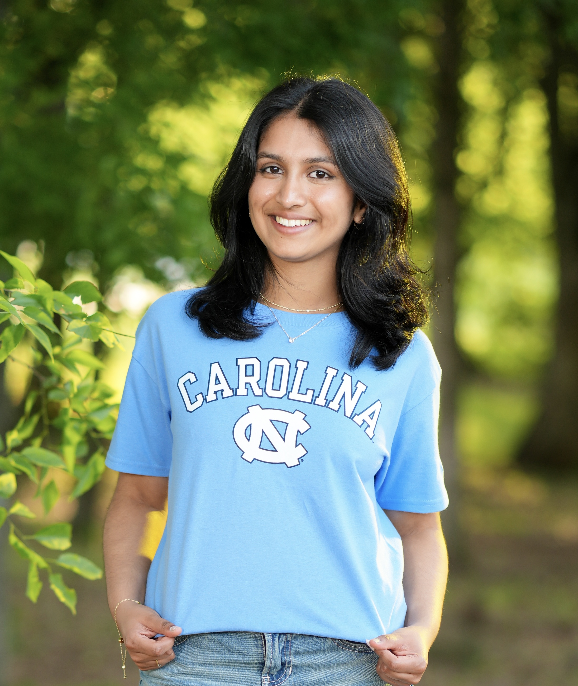

I receive the Official Certificate for completing my Arangetram, my solo Bharatanatyam dance graduation, in July of 2024.

“Nothing in life is to be feared, it is only to be understood. Now is the time to understand more, so that we may fear less.” ― Marie Curie
My interest in pursuing careers in medicine began with the first visit to my pediatrician, specifically through observing her ability to treat patients with intentional care. Witnessing how deeply her positive attitude could increase a patient's satisfaction inspired me to expand my academic horizons and seek out healthcare opportunities. Later, volunteering at Atrium Health over the summer before my sophomore year of high school allowed me to step inside a clinical environment firsthand, where I observed how cardiologists collaborate closely with pharmacists to coordinate patient care.
Alongside early clinical experience, watching my grandmother struggle with a progressive loss of movement due to Parkinson's disease transformed my general curiosity about medicine into a focused mission to understand her condition and support her emotionally. Driven to learn more, I began researching the condition online to gain clarity on the chemical proceeses causing Parkinson's disease. Through my pursuit of knowledge on the biology of her condition, I sparked an interest in researching a broader concept: what, if any, causal relationship exists between the degradation of key neuronal pathways and subsequent loss of bodily function? Seeking an environment to foster my STEM interests, I attended the North Carolina School of Science and Mathematics (NCSSM) in Durham for my junior and senior years of high school, where I had the opportunity to take specialized courses in Neuroscience, Biomedical Instrumentation, and Molecular Genetics.
The final project for my senior Neuroscience class was where my focus on researching neurodegenerative conditions came to fruition. The focus of this project was observing the role of the neurotransmitter dopamine in regulating the behavior of C. elegans, an organism with only eight dopaminergic neurons. This study used two different strains of C. elegans, each carrying a mutation in a gene responsible for regulating the production or release of dopamine across the synaptic cleft (cat-2 and dat-1). Consequently, designing an assay with control and dysfunctional strains to observe movement differences driven by dopamine dysfunction ignited my desire to understand how neurotransmitters regulate behavior through firsthand observation and discovery.
Building on this foundation, I now attend the University of North Carolina at Chapel Hill, majoring in Biostatistics. Through this program, I intend to engage in research and coursework that will allow me to mathematically model the development of complex neurodegenerative diseases.
I receive the Official Certificate for completing my Arangetram, my solo Bharatanatyam dance graduation, in July of 2024.
I formally began praciticing Bharatanatyam at the age of seven under the guidance of Guru Smt. Sujatha Manjigani in Charlotte, NC. Consequently, through rigorous training, I learned to portray Hindu deities using hand gestures (mudras), facial expressions (Abhinaya), and choreography synchronized with song lyrics. Translating and internalizing the Tamil and Telugu lyrics deepened my appreciation for the moral lessons within each song's storyline. Understanding these narratives provided me with the foundational knowledge to mentor younger students (ages 7-9) as an assistant teacher at Shakti Dance Academy. Working with younger kids made me realize that teaching takes patience, as they do not possess the same level of expertise as the teacher and require constructive criticism to be delivered in a calm manner. Learning to adapt to children's emotional and learning needs is a skillset I will carry into medicine, where easing anxiety and building trust are essential to compassionate patient care.
Along with serving as a teaching assistant, I am a certified Emergency Medical Technician with BLS/CPR training. I pursued this license to gain direct exposure to the responsibilities and environment of healthcare. By undergoing clinical rotations during my course, I learned to translate classroom knowledge into real-world care and adapt to each individual, as real patients rarely fit neatly into textbook criteria. With this certification as my foundation, I intend to work part-time as an EMT-Basic in Cabarrus County over the summer to gain clinical experience while providing competent care to my local community. In the long term, I plan to expand the intersection of my interests in neurodegenerative conditions and hands-on care as a physician-researcher. Ultimately, I will give back to my local community through a career focused on understanding, diagnosing, and treating diseases that affect a person's cognitive function, combining scientific discovery with the hands-on patient advocacy required from an EMT.